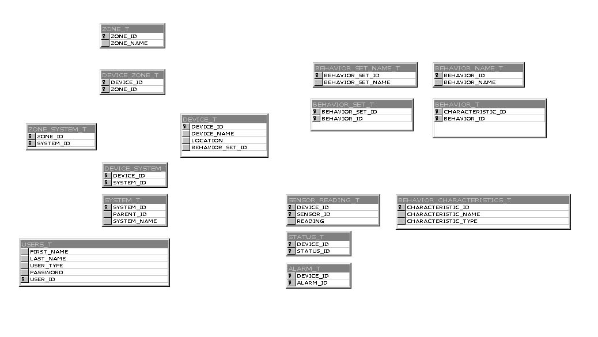

| Design Document | |
| RWL | |
| Design Document | |
| RWL | |
Overall Design
The system consists of three major components:
There is a variety of devices the system stores information on. Each type of device stores a unique set of information. The devices push information into the proper location in the database. A group of these devices is known as a subsystem.For example, flow meters store water temperature, flow rate, and water pressure, but air temperature sensors only record one thing, air temperature. The cooling subsystem might consist of two flow meters, and eight air temperature sensors.
The back end database stores information about devices. It is designed to be implemented in any DBMS (Oracle, MS SQL Server, MySQL). The database should be flexible, allowing for the storage of many different types of devices. The system should also be redundant. The redundancy will probably be achieved using the features of the DBMS, but it is possible that a custom solution will be coded by future teams.For example, the database may have support for storing information about heat pumps, water pumps and valves. If it suddenly becomes necessary to store information about cooling fans, the database must be easily updated to support the new device type.
The front end will provide a useful interface to the information in the database. It must be possible to see instantaneous as well as historical information about devices. The interface will also handle maintenance tasks, such as adding a new device type to the system, setting access permissions for users, or changing a password.Summer of 2000 to designed and implemented the back end database in Access.For example, if the ship was under fire and a certain subsystem was malfunctioning, the interface would provide an instant status of all devices in that subsystem, allowing the operator to pinpoint the device causing the problem.
Another example would be a maintenance person trying to make a decision about what water pump he should use out of the storage closet. He could look up the history for each water pump, and choose the one that had been repaired once instead of the one repaired twelve times.
Database Design

Note: This diagram does
not show relationships or view but all views are based off these tables.
More
on the Database Design